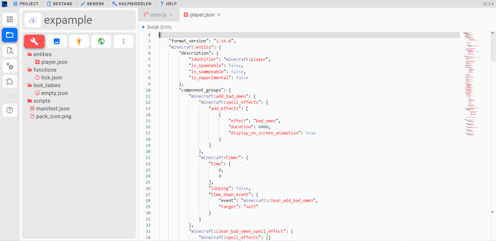
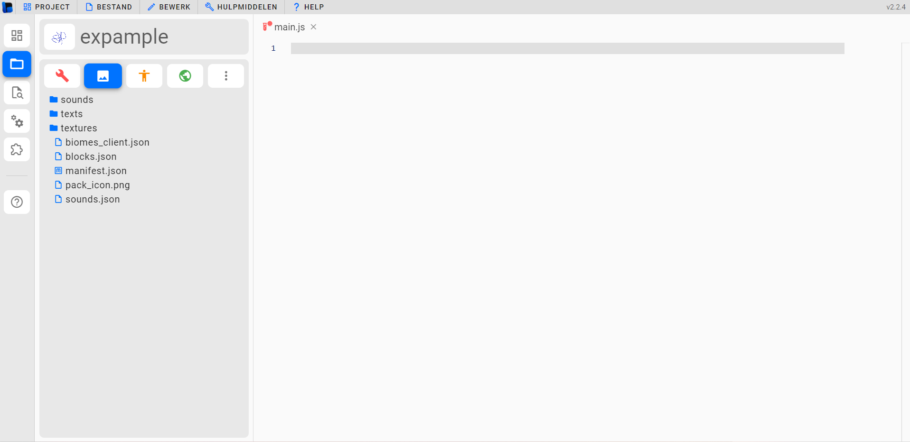
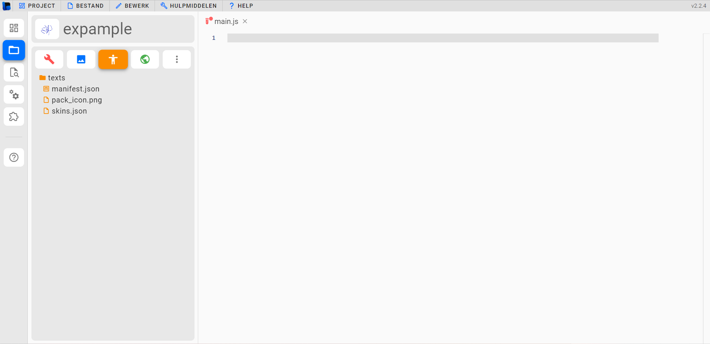
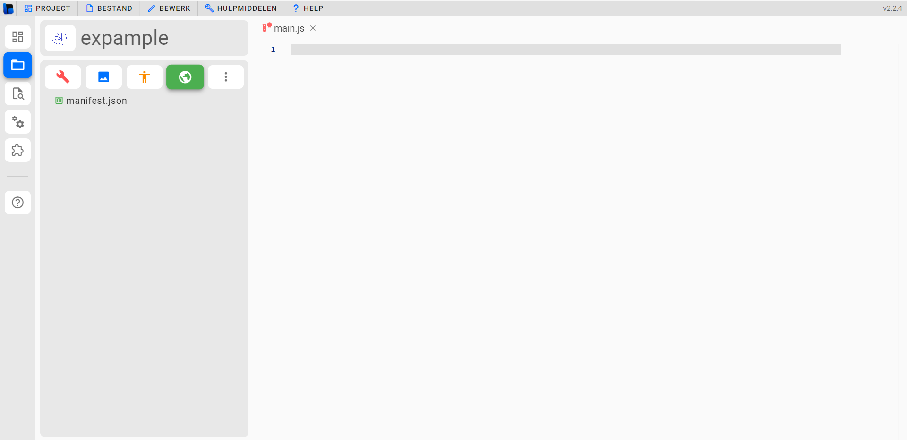
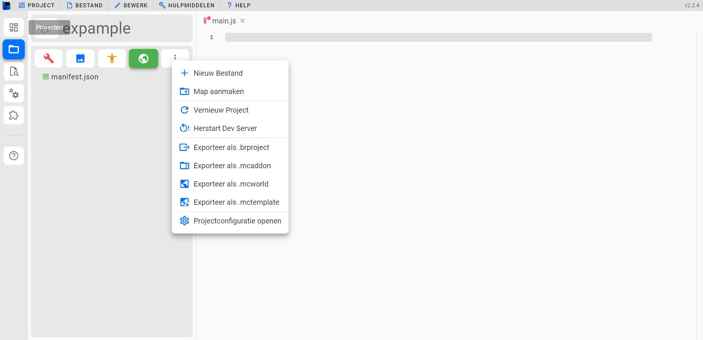
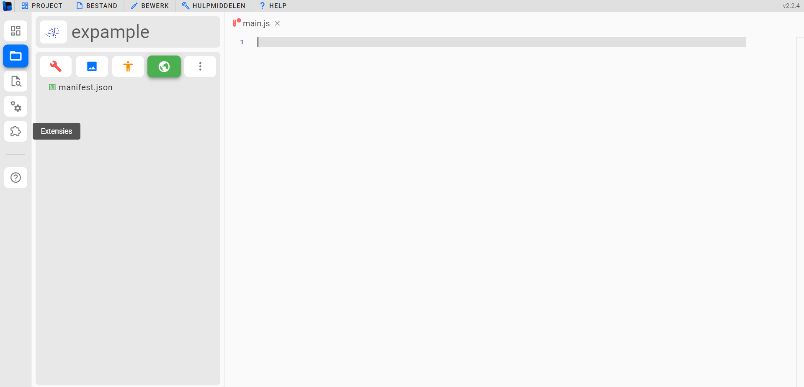
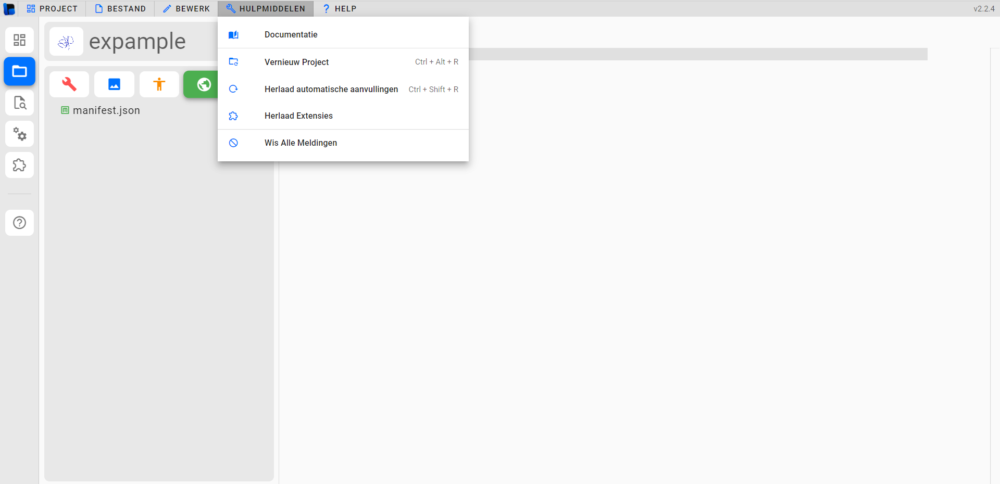
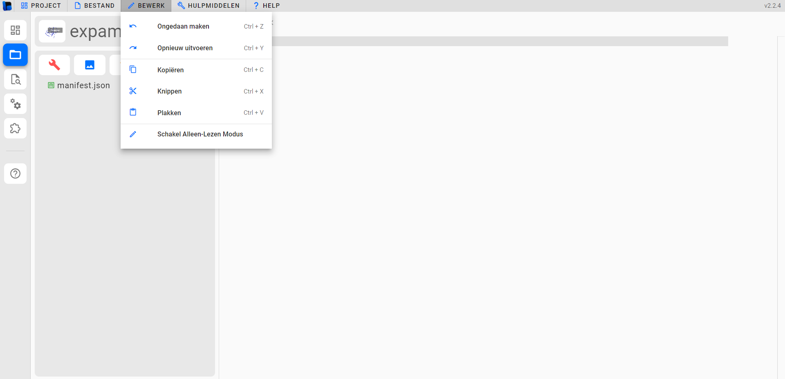
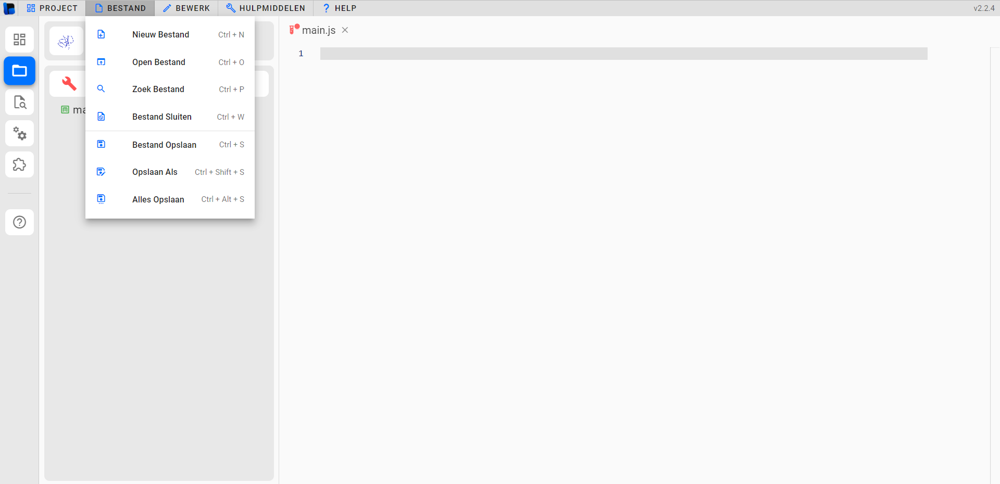
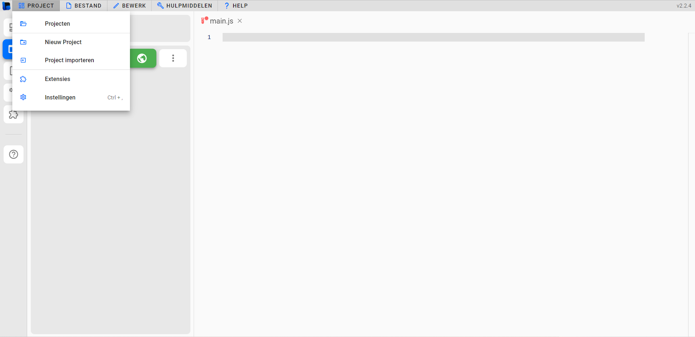

MC-DEV
ADD-ONS
first click this link to start with bridge

welkom in bridge dit is een website client waarmee je makkelijk mods etc kan maken voor in minecraft bedrock


in bridge heb je verschillende edit opties zoals modpack resource pack
een skin pack voor custom skins


dit is een world editor je kan biomes veranderen custom biomes maken toevoegen en verwijderen
en je kan je project exporten hier


er zijn ook extenties waardoor het nog makkelijker word om temaken wat je wilt
er is ook een documentatie waar je alles kan vinden wat je nodig hebt


er zijn ook undo opties en redo copy en paste
opslaan en nieuwe projecten maken is ook supper makkelijk


en als je hier naar instellingen gaat kan je ook nog meer dingen veranderen naar jou persoonlijke preferentie
alles staat er duidelijk in